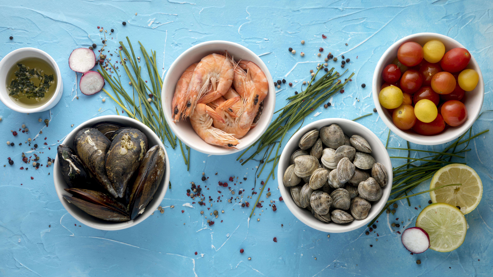
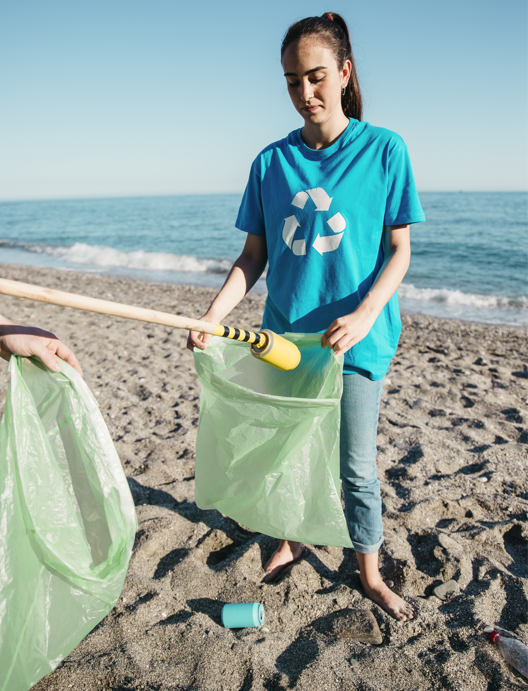
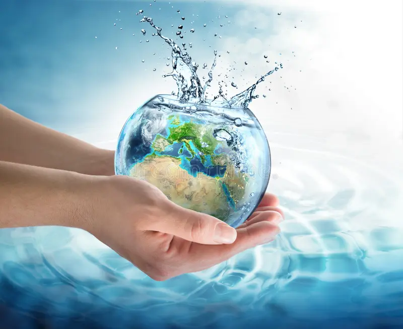

Quick Links
Reducing Plastic Waste
Plastic pollution is one of the most significant threats to ocean health. By adopting simple habits like using reusable items and reducing single-use plastics, individuals can significantly decrease the amount of waste that ends up in our oceans, protecting marine life and ecosystems.

- Effective Strategies to Help You Minimize Plastic Waste
-
- Embrace Reusable Alternatives
- Choose Plastic-Free Products
- Practice Mindful Consumption
- Participate in Local Recycling Programs
- Spread Awareness
One of the simplest ways to reduce plastic waste is by switching to reusable products. Invest in reusable bags, water bottles, coffee cups, and food containers. Not only do these alternatives cut down on single-use plastics, but they also save you money in the long run.
When shopping, look for products with minimal or no plastic packaging. Opt for items packaged in glass, cardboard, or other eco-friendly materials. Support brands that prioritize sustainability and offer bulk purchasing options to further reduce packaging waste.
Before making a purchase, consider whether you truly need the item and how it will be used. Avoid impulse buys and disposable products that contribute to plastic waste. By being mindful of your consumption habits, you can reduce your environmental impact.
Recycling is an essential part of reducing plastic waste. Familiarize yourself with your community's recycling guidelines and participate in local programs. Sort your recyclables properly and encourage others to do the same to maximize the impact of recycling efforts.
Educate your friends, family, and community about the importance of reducing plastic waste. Share information on social media, host educational events, and participate in local clean-up initiatives. By raising awareness, you can inspire others to take action and make a positive difference for the planet.
- Conclusion
- Reducing plastic waste is a vital step in protecting our oceans and marine life. By making conscious choices and encouraging others to do the same, we can collectively combat plastic pollution and contribute to a healthier planet. Every small action counts—let's work together for a sustainable future!
Supporting Sustainable Seafood
The choices we make at the dinner table can have a profound impact on ocean sustainability. By choosing seafood from responsible sources, individuals can help combat overfishing and promote practices that ensure the long-term health of fish populations and their habitats.
- How to Make a Positive Impact Through Seafood Choices
-
- Understand Sustainable Seafood Labels
- Choose Local and Seasonal Seafood
- Diversify Your Seafood Choices
- Ask Questions When Dining Out
- Support Responsible Fisheries and Farms
Look for labels like the Marine Stewardship Council (MSC) certification, which indicates that the seafood was sourced from a sustainable fishery. Familiarize yourself with other reputable certifications and eco-labels to make informed choices.
Opt for seafood that is caught or farmed locally and in season. Supporting local fisheries reduces the carbon footprint of your meal and helps sustain traditional fishing practices that are less harmful to the environment.
Explore a variety of seafood options to reduce pressure on popular species. Try lesser-known fish and shellfish that are abundant and underutilized to promote biodiversity and support sustainable fishing practices.
When dining at restaurants, inquire about the seafood's origin and how it was sourced. Choose establishments that prioritize sustainability and transparency in their seafood supply chain. By asking questions, you can encourage responsible practices in the food industry.
Purchase seafood from fisheries and aquaculture operations that follow sustainable practices. Look for certifications, such as Best Aquaculture Practices (BAP) and Aquaculture Stewardship Council (ASC), that ensure seafood is produced in an environmentally and socially responsible manner.
- Conclusion
- Supporting sustainable seafood is a vital step in protecting our oceans and ensuring the long-term viability of marine life. By making informed choices about the seafood you consume, you can help combat overfishing, promote healthy ecosystems, and contribute to a more sustainable food system. Together, let’s make a difference—one meal at a time!
Participating in Local Clean-Up Initiatives
Community clean-up events are a powerful way to directly contribute to ocean conservation. By participating in these initiatives, individuals not only help remove harmful debris from beaches and waterways but also raise awareness about the importance of keeping our oceans clean.
- How You Can Get Involved in Local Clean-Up Initiatives
-
- Join Organized Clean-Up Events
- Organize Your Own Clean-Up
- Bring Your Own Supplies
- Educate Others About Pollution
- Advocate for Long-Term Solutions
Participate in beach clean-ups, river clean-ups, and other community-led initiatives that focus on removing litter and debris from natural environments. Look for local organizations, schools, and businesses that host clean-up events and volunteer your time.
Take the initiative to organize a clean-up event in your community. Gather friends, family, and neighbors to help clean up a local park, beach, or waterway. Coordinate with local authorities to ensure proper disposal of collected waste.
Bring reusable gloves, bags, and containers to collect trash during clean-up events. Avoid using single-use plastics and disposable items that can contribute to waste. Consider bringing a reusable water bottle and snacks to stay hydrated and energized.
Use clean-up events as an opportunity to educate others about the impacts of pollution on marine ecosystems. Share information about the sources of marine debris, the importance of recycling, and how individuals can reduce their environmental footprint.
Beyond clean-up events, advocate for policies and initiatives that address the root causes of pollution. Support legislation that reduces plastic waste, promotes recycling, and protects natural habitats. Engage with local officials and community leaders to drive positive change.
- Conclusion
- Participating in local clean-up initiatives is an impactful way to contribute to ocean conservation and protect the environment we cherish. By taking action in your community, you not only help remove harmful debris but also inspire others to join the cause. Together, we can create cleaner beaches, healthier ecosystems, and a brighter future for our oceans!
Advocating for Marine Protection Policies
Advocacy is crucial for effective ocean conservation. By supporting policies that protect marine environments and engaging with local representatives, individuals can influence decision-making processes that safeguard our oceans for future generations.

- How You Can Engage in Advocacy for Marine Protection
-
- Understand the Importance of Marine Protected Areas (MPAs)
- Engage with Local Policymakers
- Support Environmental Organizations
- Participate in Public Awareness Campaigns
- Advocate for Climate Action
Learn about the benefits of MPAs, which are designated zones that conserve marine ecosystems and protect biodiversity. Understand the role of MPAs in supporting fish populations, preserving habitats, and promoting sustainable fisheries.
Reach out to local officials, legislators, and policymakers to express your support for marine protection policies. Attend town hall meetings, write letters, and participate in public hearings to advocate for the establishment and enforcement of MPAs.
Join or donate to environmental organizations that work to protect marine environments and advocate for sustainable policies. Support campaigns, petitions, and initiatives that promote marine conservation and raise awareness about ocean issues.
Get involved in public awareness campaigns that highlight the importance of marine protection and conservation. Share information on social media, attend educational events, and engage with your community to raise awareness about the need for policy action.
Recognize the connection between climate change and ocean health. Advocate for policies that address climate change, reduce greenhouse gas emissions, and mitigate the impacts of global warming on marine ecosystems. Support initiatives that promote sustainable energy and reduce carbon footprints.
- Conclusion
- Advocating for marine protection policies is a vital step toward ensuring the sustainability of our oceans and the diverse life they support. By engaging with policymakers, supporting environmental organizations, raising awareness, and promoting climate action, you can contribute to a collective effort that prioritizes ocean health. Together, we can create a future where marine ecosystems thrive and continue to provide essential resources for generations to come.
Educating Others About Ocean Conservation
Knowledge is a catalyst for change. By educating friends, family, and the community about the importance of ocean conservation, individuals can inspire collective action and foster a deeper appreciation for marine ecosystems and their preservation.
- How You Can Effectively Educate Others About Ocean Conservation
-
- Host Informative Workshops and Events
- Utilize Social Media Platforms
- Develop Educational Materials
- Engage with Schools and Youth Groups
- Lead by Example
Organize workshops, seminars, and educational events that focus on ocean conservation topics. Invite guest speakers, scientists, and environmental experts to share their knowledge and insights with the community. Cover a range of issues, from plastic pollution to coral reef protection.
Leverage social media platforms to raise awareness about ocean conservation. Share informative posts, videos, and infographics that highlight key issues and solutions. Engage with followers, answer questions, and encourage discussions on marine conservation topics.
Create educational materials, such as brochures, fact sheets, and lesson plans, that focus on ocean conservation. Distribute these materials at schools, community centers, and public events to reach a wider audience and promote environmental literacy.
Collaborate with schools, youth groups, and educational institutions to integrate ocean conservation into curricula and extracurricular activities. Offer presentations, field trips, and hands-on learning experiences that connect students with marine ecosystems.
Be a role model for ocean conservation by practicing sustainable habits and making eco-friendly choices. Demonstrate the importance of reducing plastic waste, supporting sustainable seafood, and participating in clean-up initiatives. Inspire others through your actions and commitment to protecting the oceans.
- Conclusion
- Educating others about ocean conservation is crucial for fostering a sense of responsibility toward our marine environments. By hosting events, utilizing social media, developing educational materials, engaging with youth, and leading by example, you can create a ripple effect that encourages collective action for ocean health. Together, we can cultivate a community that values and protects our oceans for future generations!